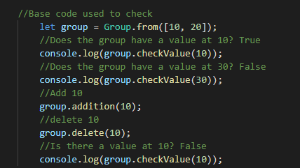
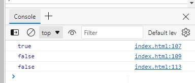

Week 4 Notes and Examples
Menu
Script Exercise
Check the console
Notes
Forms are a very common method of interacting with a web page. A form is the main component of Google’s home page, and most of us use forms every day to log in to our favorite sites.
Traditionally, when a form was submitted, it would be sent to a server where the information would be processed using a 'back end' language such as PHP or Ruby. It’s possible, and becoming more and more common, to process the information in a form on the 'front end' before it is sent to the server using JavaScript
A form object also has a method called elements that returns an HTML collection of all the elements contained in the form. In this case the form contains two controls: an input element and a button element:
Possibly the most important form event is the submit event, occurring when the form is submitted. Usually this will send the content of the form to the server to be processed, but we can use JavaScript to intercept the form before it’s sent by adding a submit event listener.
The default type of input field is text, which is used for entering a short piece of text, such as a username.
This uses the spread operator to turn the node list into an array. This then allows us to use the filter() method that returns an array containing only the check boxes that were checked (this is because their 'checked' property will be truthy). We then chain the map() method to the end, which replaces each checkbox in the array with its 'value' property. This array is then returned and stored in the hero.powers variable.
Radio buttons are created using input fields with type='radio'. Like checkboxes they allow users to check an option as true, but they provide an exclusive choice of options, so only one option can be selected.
All these radio buttons have the same 'name' attribute of 'category'. This is used to group them together ― only one radio button can be checked in a group that has the same name attribute. It also means we can access an HTML collection of all the radio buttons in that group using the property of the same name
Hidden fields can be created using input fields with type='hidden'. These are not displayed by the browser, but have a 'value' attribute that can contain information that is submitted with the form. They are often used to send information such as settings or information that the user has already provided. Note that the information in these fields is in no way secret, as it’s visible in the HTML, so shouldn’t be used for sensitive data. The value of a hidden input field can be changed using JavaScript in the same was as any other input field.
There are lots of new input types included in HTML5, such as number, tel and color. As browsers start to support these, they will implement different user-interface elements depending on the input type. So a number field might use a slider, whereas a date field will show a calendar. They will also validate automatically, so an email input field will show an error message if there’s no valid email address.
Number input fields also have optional 'min' and 'max' attributes that can be used to limit the input given. The 'step' attribute is used to specify how much the value changes by each click. Most modern browsers will add controls at the side of the input field so the value can be increased or decreased
It is also possible to find out the index of the option that has been selected, using the selectedIndex property.
Validation can occur on the client side using JavaScript, and on the server side. It is advisable to use both client-side and server-side validation. JavaScript should not be relied upon to validate any data before it’s saved to a database. This is because it’s possible for a user to modify the JavaScript code and bypass the validation rules. It's also very easy to bypass the front-end completely and send arbitrary data to the application's backend. For these reasons, JavaScript validation should be used to enhance the user experience when filling in a form by giving feedback about any errors before it’s submitted.
In other words front end validation can be insecure if you are not careful